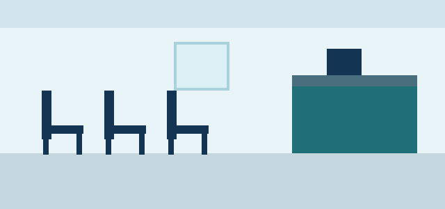

Pedí tu turno
Presentate 15 minutos antes con tu DNI y la credencial de la obra social.

Atención de lunes a viernes de 8 a 20 h y sábados de 8 a 13 h.
Para conocer los requisitos de cada obra social, hacé clic acá.
Tamaño del texto: